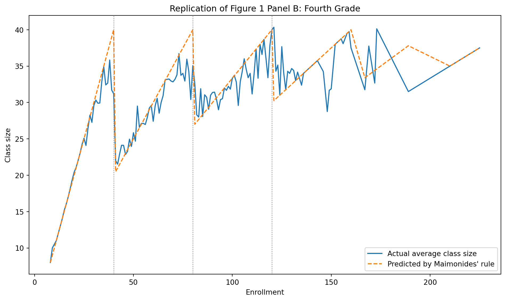

Using Maimonides’ Rule to Estimate the Effect of Class Size
Author
Yixin Cao
Published
April 22, 2026
Introduction
This project replicates a key finding from Angrist and Lavy (1999), which studies the causal effect of class size on student achievement.
The authors exploit a natural rule known as Maimonides’ rule, which caps class size at 40 students. When enrollment exceeds 40, classes are split, creating a discontinuity in class size. This generates quasi-random variation in class size, allowing for a causal interpretation using a regression discontinuity design (RDD).
The main research question is whether smaller class sizes improve student test scores.
Main Analysis
import pandas as pdimport numpy as npimport statsmodels.formula.api as smfimport matplotlib.pyplot as pltdf = pd.read_stata("data/final4.dta")print("Shape before filters:", df.shape)print(df.columns.tolist())df.head()
The replication do files apply sample restrictions before estimation. I follow the same logic here by keeping reasonable class sizes, positive enrollment, the relevant school type, and nonmissing reading scores. The do file also indicates that tipuach is the disadvantage control and that predicted class size is constructed from c_size. This matches the paper’s discussion of a school-level percent disadvantaged control and enrollment-based rule variable.
df = df.copy()# sample restrictions based on the replication do filedf = df[(df["classize"] >1) & (df["classize"] <45) & (df["c_size"] >5)]df = df[(df["c_leom"] ==1) & (df["c_pik"] <3)]df = df[df["avgverb"].notna()].copy()print("Shape after filters:", df.shape)df[["avgverb", "classize", "c_size", "cohsize", "tipuach"]].head()
Shape after filters: (2049, 51)
avgverb
classize
c_size
cohsize
tipuach
0
65.769997
35
35
35
24
1
59.320000
27
54
54
38
2
63.580002
27
54
54
38
3
78.370003
38
38
38
6
4
76.599998
37
73
73
3
Variable Mapping
The paper’s fourth-grade variables map to this dataset as follows:
avgverb = average verbal/reading score
classize = actual class size
c_size = enrollment used for the rule construction
tipuach = disadvantage control
cohsize = cohort size variable available in the file, but the replication code uses c_size for the rule-based construction
The paper defines the main variables as average verbal score, class size, enrollment, and percent disadvantaged.
Construct Maimonides’ Rule
The paper defines predicted class size as:
\[
f_s = \frac{\text{enrollment}}{\lfloor (enrollment - 1)/40 \rfloor + 1}
\] This is the nonlinear rule that creates the discontinuities used for identification.
Figure 1 panel b in the paper plots average class size against initial enrollment for fourth grade, together with the class-size function predicted by Maimonides’ rule. The key visual fact is that actual class size rises with enrollment but drops at thresholds such as 40, 80, and 120, mirroring the rule.
plot_df = ( df.groupby("c_size", as_index=False)[["classize", "func1"]] .mean() .sort_values("c_size"))plt.figure(figsize=(10, 6))plt.plot(plot_df["c_size"], plot_df["classize"], label="Actual average class size")plt.plot(plot_df["c_size"], plot_df["func1"], linestyle="--", label="Predicted by Maimonides' rule")for cutoff in [40, 80, 120]: plt.axvline(cutoff, color="gray", linestyle=":", linewidth=1)plt.xlabel("Enrollment")plt.ylabel("Class size")plt.title("Replication of Figure 1 Panel B: Fourth Grade")plt.legend()plt.tight_layout()plt.show()

This figure plots average class size against enrollment for fourth-grade classes, along with the predicted class size from Maimonides’ rule.
The dashed line shows the theoretical class size implied by the rule, while the solid line shows actual observed class sizes. As enrollment increases, class size rises until it reaches 40 students. When enrollment exceeds a multiple of 40, the class is split, causing a sharp drop in average class size.
This discontinuous pattern is the key source of identification in the paper. It creates quasi-random variation in class size that can be used to estimate causal effects.
Part 2: Replicate the Naive OLS Baseline (Table II Logic)
The paper’s Table II reports OLS estimates for fourth-grade reading and math scores as a function of class size, percent disadvantaged, and enrollment. It shows that once disadvantage is controlled for, the raw positive correlation between class size and scores largely disappears and may become negative.
Below I estimate the fourth-grade reading specification in the same spirit.
I estimate two OLS specifications to examine the relationship between class size and reading scores.
The first model includes only class size and disadvantage. In this specification, class size has a small negative and statistically significant effect on reading scores.
The second model adds enrollment as a control variable. In this specification, the coefficient on class size decreases in magnitude and becomes statistically insignificant. This suggests that the initial relationship was partly driven by differences across schools rather than the causal effect of class size.
Across both models, the disadvantage variable (tipuach) remains large and highly significant, indicating that socioeconomic background is a major determinant of student performance.
These findings are consistent with the paper, which shows that OLS estimates are sensitive to controls and may be biased. This motivates the use of the regression discontinuity design based on Maimonides’ rule.
Part 3: Replicate Reduced-Form RDD-Style Estimates (Table III Logic)
The paper’s Table III regresses class size and test scores on predicted class size from Maimonides’ rule, with controls for percent disadvantaged and enrollment. For fourth-grade reading, the paper reports a negative reduced-form relationship between the rule-based predictor and reading scores.
Reduced Form: Reading on Predicted Class Size + Disadvantage
The main difference between the OLS and reduced-form estimates is both the magnitude of the coefficient and the source of variation used for identification.
The OLS estimates show a small negative relationship between class size and reading scores. In the baseline specification, the coefficient is approximately -0.053, and after controlling for enrollment, it decreases slightly to about -0.040. This suggests that once school size is accounted for, the relationship between class size and achievement becomes weaker.
In contrast, the reduced-form estimates using predicted class size from Maimonides’ rule are consistently larger in magnitude, ranging from about -0.083 to -0.089 across specifications. This indicates a stronger negative effect of class size on reading scores when using variation generated by the institutional rule.
The difference arises because OLS uses general variation in class size across schools, which may be correlated with underlying differences such as socioeconomic background or school characteristics. By contrast, the reduced-form estimates rely only on variation induced by Maimonides’ rule, which creates sharp discontinuities in class size at enrollment thresholds.
As a result, the rule-based estimates are more credible for causal inference. They suggest that reducing class size has a larger negative effect on reading scores than what is implied by naive OLS, highlighting the importance of using a valid identification strategy.
Something Additional
Explain Why the Method Supports a Causal Interpretation
This is the additional requirement beyond replication.
The reason Angrist and Lavy can make a causal claim is that Maimonides’ rule induces a known nonlinear and nonmonotonic relationship between enrollment and class size. Enrollment itself may still be related to test scores, but the key idea is that most non-class-size effects of enrollment should vary smoothly, while class size changes sharply at the thresholds. If test scores move in a way that mirrors those same discontinuities, the most plausible explanation is that class size is causing the change. The paper explicitly presents this as an application of Campbell’s regression-discontinuity design.
To make that intuition visible, I plot average reading scores by enrollment.
This second graph plots average reading scores against enrollment and highlights the locations of the rule thresholds. Unlike the class size graph, the relationship between enrollment and reading scores is much noisier and does not show sharp discontinuities as clearly.
However, there is still some evidence of changes in the pattern of scores around the enrollment cutoffs. This suggests that class size, which changes discontinuously at these thresholds, may influence student outcomes even if the relationship is not visually as clean.
This is consistent with the paper’s argument that most factors affecting test scores vary smoothly with enrollment, while the discontinuities in class size are driven by Maimonides’ rule. Therefore, even if the pattern is not perfectly visible in raw averages, the regression-based approach can still isolate the causal effect.
Conclusion
This replication follows the main empirical strategy of Angrist and Lavy (1999) using fourth-grade data. I reproduced the key graphical intuition behind Figure 1 panel b, estimated naive OLS models similar to Table II, and estimated reduced-form rule-based models similar to Table III.
The results show that OLS estimates are sensitive to controls and tend to produce smaller effects of class size. In my results, the OLS coefficient becomes smaller and statistically insignificant once enrollment is included, suggesting that simple correlations are affected by confounding factors.
In contrast, the reduced-form estimates based on Maimonides’ rule are consistently larger in magnitude, indicating a stronger negative relationship between class size and reading scores. This supports the paper’s conclusion that smaller classes improve student achievement.
Overall, the comparison highlights why identification matters. While OLS relies on general variation that may reflect differences across schools, the discontinuities created by Maimonides’ rule provide a more credible source of causal variation.